背景：为啥 OpenCode 火了
其实我不是一开始就用 OpenCode 的，如果你这深度用过 AI 编程工具，大概率和我路径类似：
一开始用 Copilot 后来转向更强的 Claude / chatGPT，对话方式 再到 Cursor、Claude Code、Antigravity 这类「Agent 化工具」
而最近促使开始认真评估 OpenCode 的，有一个比较现实的情况就是
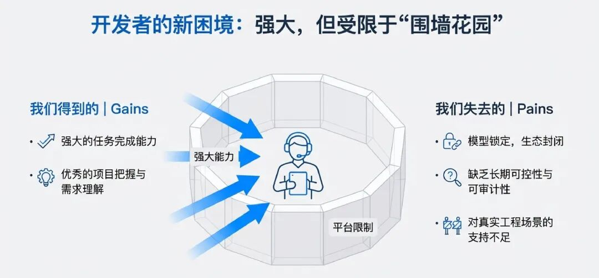
Claude Code 开始封闭化
Claude Code 刚出来的时候，给我体验非常好的：
任务完成度体验极好、上手极快 项目把握、需求理解极佳 编码Agent几乎是头一档的存在
但在后续版本演进中，变化开始逐渐显现：
Claude公司是逐利的，期望把用户圈在自己的生态里面，Claude Code 在最新版本不能方便通过配置切换模型，逐步限制用户使用其他模型。
对个人开发者来说，这可能不只是有点不爽， 但对技术人员来说，这是一个危险的信号，工具一旦锁死模型，就等于锁死了你的后续工具和工作模式、还有Agent的创造力和可行性。
开始转向 OpenCode
OpenCode之前就已经存在，正是在cc这个背景下，OpenCode 得以快速进入大家的视野，各个博主开始推荐
它解决的不是“比 Claude Code 更好用”这个问题，而是底层的问题：
我能不能自由的各类我想用使用模型？ 这个工具能不能长期可控？ 它是不是足够好用，足够工程化？
而 OpenCode 给出的答案非常明确：
不限制模型（Claude / GPT / Gemini / GLM / Kimi / Minimax） 完全开源，核心逻辑可审计 Agent + 权限 + 工具，天生为工程场景设计 支持CLaude Skills ， 完全兼容claude.md
这也是为什么你会发现，最近使用 OpenCode 的，往往不是新手
而是已经用过一圈 AI 工具(包括Claude Code)的老技术同学了
OpenCode 是什么
先快速统一下认知，OpenCode 是一款 开源的终端编程 Agent（AI Coding Agent），核心特点是：
理解整个代码仓库，而不是单文件 能读 / 写文件、执行命令、跑测试 有 Agent、权限、模式等一整套工程化设计 支持Claude Skill、兼容Claude.md 全面对标Claude Code，在体验上不好的会进行优化
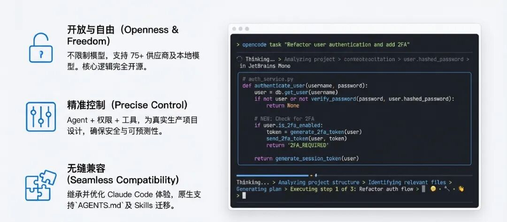
OpenCode 10个使用小技巧
接下来分享OpenCode常用的小技巧，助力你快速上手使用
技巧一：安装与启动
那我们快速开始，首先先安装一下OpenCode
安装
官方推荐方式：
curl -fsSL https://opencode.ai/install | bash
安装完成后，确认：
opencode --version
启动姿势
不要在一个脏乱无章的目录里启动 OpenCode，相对推荐：
一个 Git 代码仓库 项目目录结构相对清晰
cd your-project
opencode
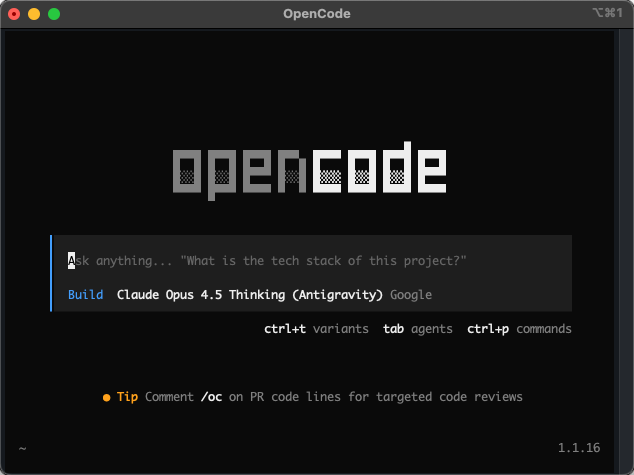
技巧二：/init 项目说明书
进入项目后，不要直接开始问问题，第一步可以是初始化上下文：
/init
/init 会做什么
扫描当前项目结构 生成 AGENTS.md建立项目级上下文记忆 为后续 Agent 行为提供“项目说明书”
另外，我建议将 AGENTS.md 也纳入 Git 管理，这是 opencode 理解你项目的核心入口，类似CLaude Code 中 claude.md文件
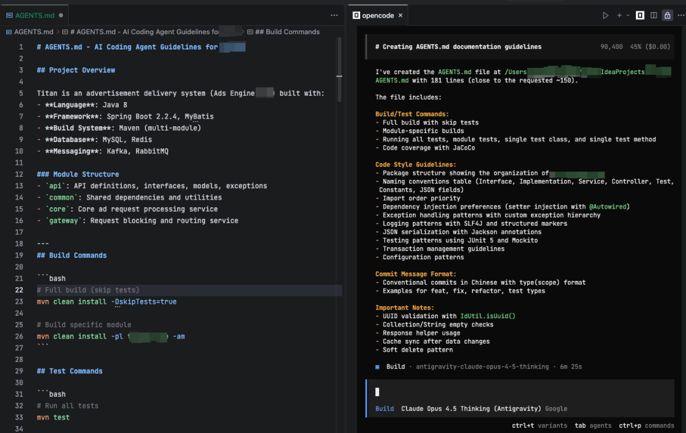
技巧三：善用 OpenCode TUI 的 Slash 命令提升效率
在 OpenCode 终端界面（TUI） 中，输入 / 加命令名就能快速执行常用操作，不用离开当前上下文去手动操作或重启界面。
/connect — 迅速添加你的 API 提供商
如果你觉得opencode提供的免费模型有并发限制速度太慢当
你可以启动 OpenCode 来配置自己 API 模型密钥：
/connect
这会弹出一个可选择的提供商列表，让你快速 添加 API Key 并连接服务，可以一键开始使用对应的模型模型
适用场景：适用于首次设置 API 或切换 provider
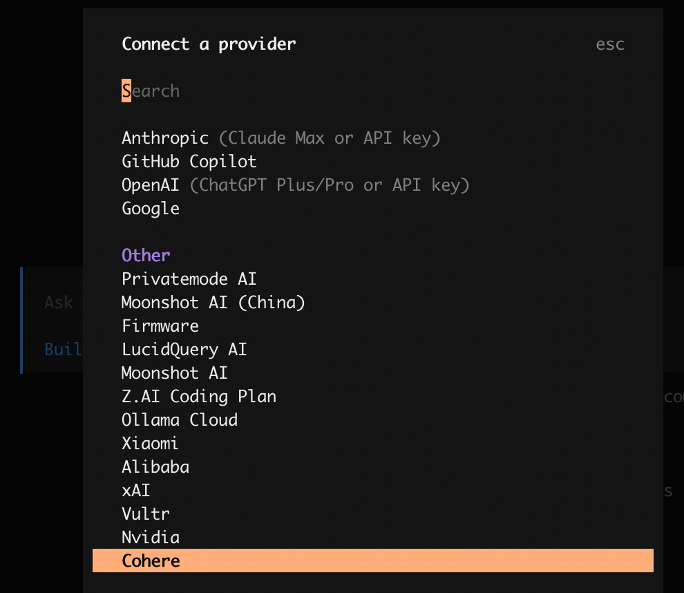
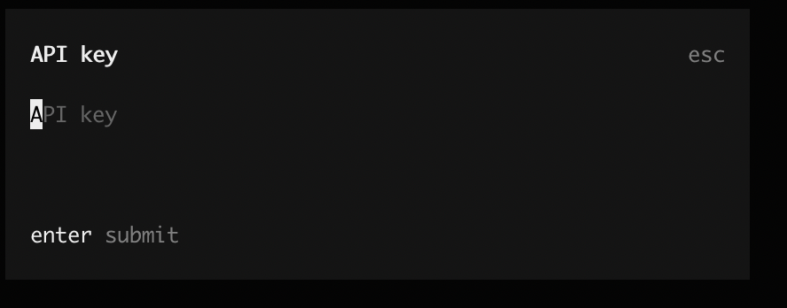
/models — 查看可用模型清单
/models
这个命令会在 TUI 内列出当前已连接 provider 下的所有可用模型，快速选择当前会话默认的模型
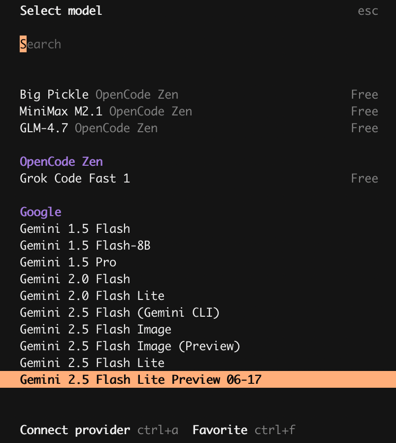
/new — 快速开始全新会话
/new
如果你想从头开始一个完全干净的对话（清空上下文），这个命令比重启整个 TUI 更快。它类似于Claude Code中的 /clear。
/compact — 压缩或总结当前会话
/compact
该命令会 压缩当前对话内容（类似自动总结），让对话更紧凑、更易理解，可以让我们在长对话里整理关键信息，减少信息干扰
技巧四：进阶Slash命令/undo与/redo 撤销与重做
/undo
这是用得比较多的一个命令：/undo，撤销对话中的最后一条消息。这将删除用户的最新消息、所有后续回复以及所有文件更改
应用场景：
当 Agent 已经改完了，但改动方向明显不对
或者整个逻辑存在问题的情况
你可以不用发消息给它说：“改回来”，而是直接执行/undo命令
这和 Git revert 的体验感是一样的，本质原理是使用 Git 来管理文件更改
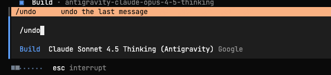
/redo
/redo 经常和 /undo 搭配使用，重做之前撤销的消息，仅在使用 /undo 后可用。
内部原理是使用 Git 来管理文件更改，所以项目需要创建.git
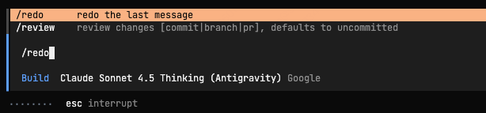
技巧五： @文件 或 @目录 告诉Agent指定的范围
终端 Agent 最大的问题之一是：它要看得太多，也容易脑补一些别的有的没的，容易跑偏。
这时候，@文件 就是你的控制上下文的主要手段，控制上下文范围
比如：
@src/service/order_service.go， 帮我分析这里的并发问题
可以很好的明确上下文边界，以及提高回答和修改的精度
我个人在以下场景几乎都会 @文件：
Debug 代码 Review 精准重构
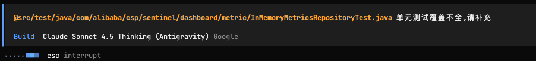
技巧六：Plan / Build 模式，是我最想强调的一个点
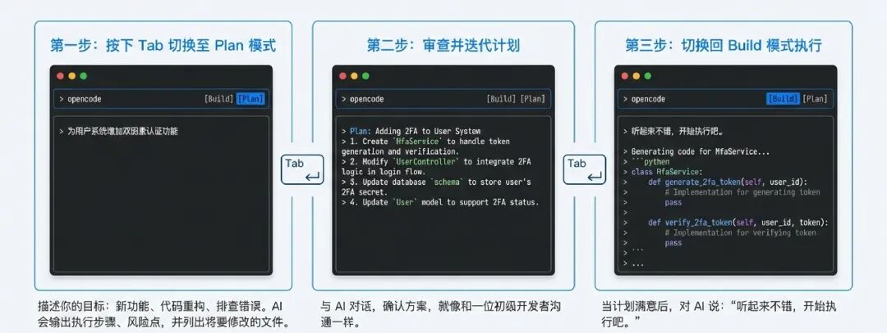
OpenCode 有一个比较容易被忽略、但非常重要的技巧，Plan / Build 模式切换
两种核心模式
Plan Mode：只规划、不执行 Build Mode：直接改代码、执行命令、运行脚本
你可以通过 Tab 键 在模式之间快速切换，相比Claude Code 需要两次Tab体验好一些
│ Build Mode ▼ │ ← 默认模式
│ Plan Mode │ ← 规划优先
我个人推荐的工作流
首先切换到 Plan Mode 进行描述你的目标（功能 / 重构 / 排错）描述 让 AI 进行输出： 可能包括步骤拆解 要检查风险点 要修改的涉及文件等信息 最后，确认无误后，再通过Tab切回 Build Mode 来进行执行
这一步可以显著的降低AI 直接代码改错的概率，减少返工
技巧七：巧妙用 Agents，不仅仅把OpenCode 当成一个Chat
其实在 OpenCode 中Agent 是一等公民
其中有两个主要的Agent分别是Plan和Build，还有两个子Agent是General和Explore
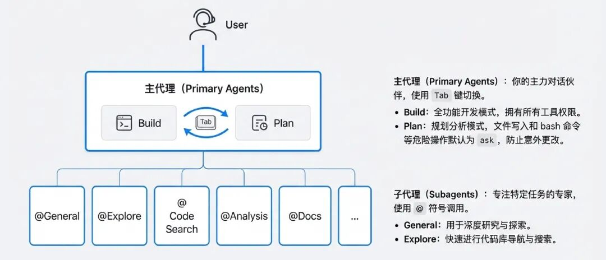
创建自己的 Agent
opencode agent create
你可以为不同任务创建不同 Agent，例如可以创建：
api-doc-agent：API文档自动编写上传review-agent：只做代码审查test-agent：生成 / 修复测试security-agent：关注安全问题
技巧八：Agent的权限控制
通过这个你可以精细化控制 Agent 能做什么、不能做什么。
当然，经过一段时间，从开始的慢慢接触测试，到深入信任，不需要再问询可以提高效率。
示例配置：
{
"$schema": "https://opencode.ai/config.json",
"agent": {
"build": {
"permission": {
"bash": {
"git push": "ask",
"grep *": "allow"
}
}
}
}
}
opencode.json 配置文件位置在：
cat ~/.config/opencode/opencode.json
常见使用场景
核心分支：禁止自动写代码
生产环境脚本：所有 bash 操作必须确认 安全扫描 Agent：只允许读文件
安全扫描 Agent：只允许读文件
技巧九：非交互模式
OpenCode 不只能够通过对话方式来运行，它还可以被 脚本化调用。
opencode -p "Review this diff and summarize risks"
适合的应用场景
Git hooks（自动生成 commit message）
PR 自动代码审查 CI 阶段生成改进建议 自动化文档 / 注释生成
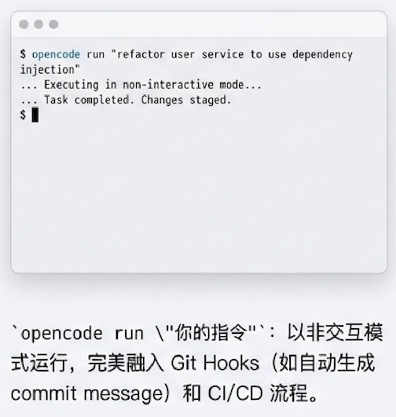
技巧十：在 IDE 中集成 OpenCode
当你已经在 IDE（例如 VS Code/Cursor）中安装并配置好 OpenCode 后
可以用以下快捷键快速打开 OpenCode 会话，无需切换到终端手动输入命令：
快速打开 OpenCode
这会在 IDE 的分屏终端中启动或聚焦现有的 OpenCode 会话，大大提升工作流效率
macOS: Cmd + EscWindows / Linux: Ctrl + Esc
可以插件市场直接搜索：opencode进行按照
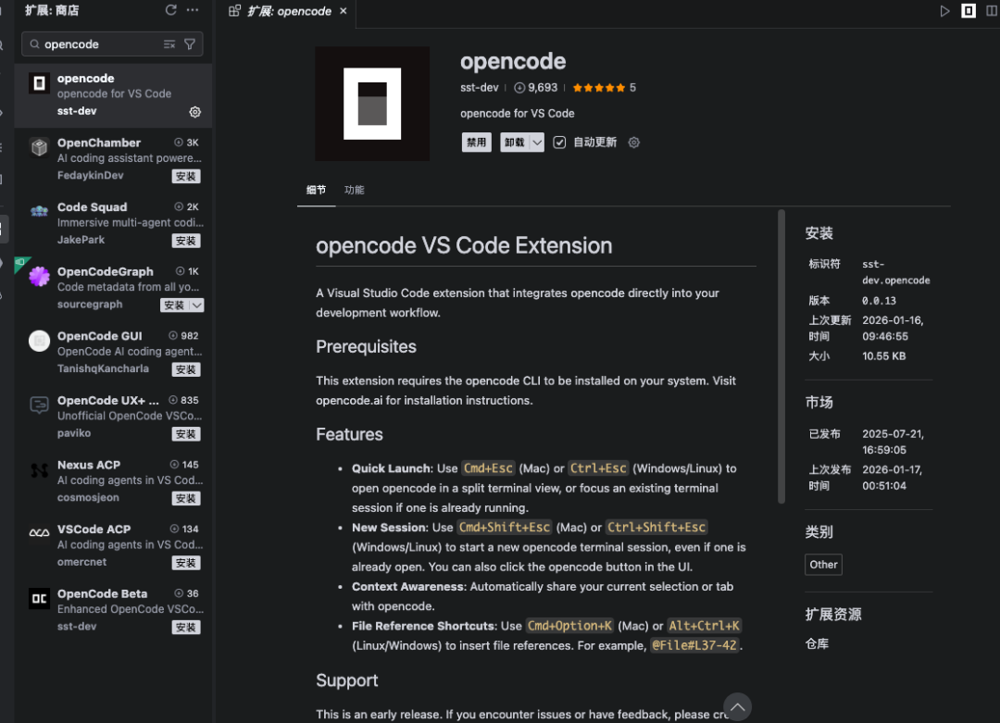
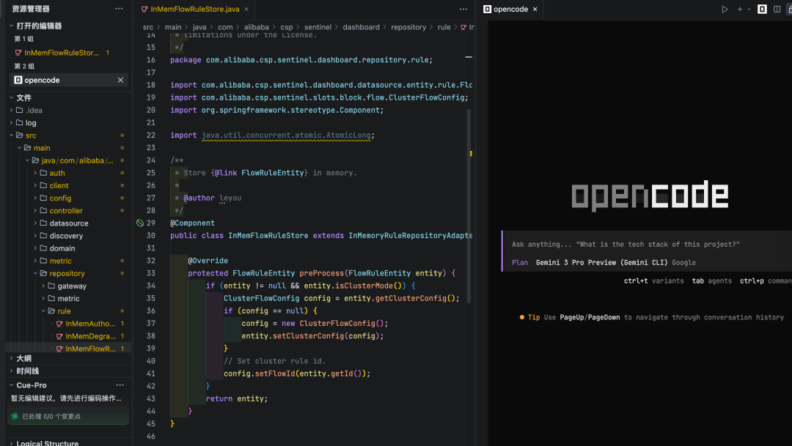
结语：会开始尝试用 OpenCode
当然了，说一句实话：OpenCode 并不适合所有场景。
我个人的判断标准是：
需求偏流程、偏工程、偏系统性 → 非常适合 需要人为修改代码，通过眼镜去读代码细节 → 不太合适
我觉得它更适合通过插件集成到传统IDE：
进行重构，理解分析项目 异常代码排查与问题分析 自动化工程流程
在我看来，OpenCode 和 其他AI IDE 并不是互相替代关系
Cursor、Antigravity：AI IDE 内，体验流畅，很适合写代码 OpenCode：扩平台，跨IDE，更开放，也更自由，自由的搭建自己的 Agents，以及多模型多持